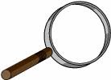

Q
How does one punch out the corner of an element and put something in the space created?
Answer: you don't, at least not structurally. But the appearance can be achieved very easily just by using
floated elements and, when necessary, some tiny negative margins. In this example, I've wrapped the "Q" in a
div of its own and then floated the div over. Then I give the float some nice
padding and margins, and center the character. Finally, I set thick white borders on the float, which
matches nicely with the white document background-- but only the right and bottom borders are made thick.
The top and left borders are set to zero. To wit:
div#punch {
float: left;
font-size: 500%;
font-family: 'Times New Roman', Times, serif;
width: 1.2em;
text-align: center;
padding: 0.1em 0;
background: #346;
color: white;
border: solid white 1px;
border-width: 0 0.2em 0.2em 0;
margin: 0 0.5em 0.2em 0;
}
It all adds up to the appearance of a block that's had a corner punched out and replaced, and the text in
the block reflowed to go around the punchout. And, in a sense, that's exactly what happened. But what if I
want to put a border around the main block of text? How do I keep it from encircling my punched-out corner?
Even worse, how do I get that border to run along the edge of the punchout?

Boxpunch
So we can do it after all! (Assuming we aren't using IE5.x/Win or IE6/Win, that is, which isn't able to keep
up. If you want to see the variant that does work in IE/Win, go ahead.) Notice
how the border of the main div is bent out of a rectangle so that it runs inside the floated
element. Okay, I'm lying. That isn't what's really happening. Instead, I set one-pixel black borders on the
right and bottom edges of the float, and no border at all on the top and left edges. Then the float is
pulled one pixel up and one pixel to the left, which is accomplished by setting -1px margins on
those sides. This causes the float to overlap the border set on the main div, thus covering up
the black border with the white background of the float. The code looks like this:
div#main2 {
border: 1px solid black;
}
div#punch2 {
float: left;
width: 25%;
text-align: center;
background: white;
color: black;
border: solid black 1px;
border-width: 0 1px 1px 0;
padding: 0 10px 5px 0;
margin: -1px 25px 10px -1px;
}
div#punch2 img {
max-width: 100%;
}
As in the curvelicious demo, the
h1 at the top is simply styled as normal, and its borders and background "slide under" the
floated element. This is expected behavior in CSS2. If you were to set a left border on the h1,
you'd have to make it at least 111px wide before it could be seen at all! Well, unless it
become so tall that it was taller than the float. Then you'd be able to see it below the float. If your
browser supports text zooming, try increasing the text size until the h1 is taller than the
float. You should see what I mean then.
Like this text? It can be yours for just $19.99! But wait! There's more! If you call in the
next ten minutes, we'll throw in a copy of Amaya absolutely free! Don't delay-- act now!
Again with the punching
Of course, if one is floating elements, then one can float anything, not just images. In this case I've
floated a div, but it could have been any text element. The borders and margins are set up just
like last time. Think of it-- you could put a small navigation panel in that float, or anything else that
takes your fancy. A quotation, perhaps? How about a small table of icons or decorative images? You could
just float the table itself and be done. Pretty cool, eh?
For that matter, why restrict yourself to floating things into the corner of the box? How about going
straight to the right or left from within the block?
"Better to stick to what's needed."
It's the same basic principle as before, only this time we need to draw three of the borders and only pull
the float one pixel to the left. We could keep pulling it one pixel upward as well, but that's no necessary
here and could (in theory) lead to complications. Better to stick to what's needed. Again, any element could
be floated, so you could float links for further reading, more decorative images like folder tabs, a list of
short ideas or points that are related to the main text, a table of figures, or the familiar "pull quote"
style of taking a short phrase in the text and repeating it in larger text. Like we see here.
div#punch3b {
float: right;
width: 25%;
text-align: left;
font-size: 140%;
font-weight: bold;
font-style: italic;
padding: 1em;
text-indent: -0.5em;
background: white;
color: black;
border: solid black 1p;
border-width: 1px 0 1px 1px;
margin: 0.2em -1px 0.2em 0.5e;
}
Note that, due to rounding errors, Mozilla (and thus Netscape 6.x) may not move a right-floated element over
as far as it should be. If you resize your browser window enough times, you'll see a black border appear to
the right of the pull quote. That's because the float is one pixel too far to the left, and the main
div's border becomes visible. Hopefully they'll fix that eventually.
There are any number of ways this concept could be extended, really. The only limit is your imagination! And
negative margins don't have to be restricted to floats, either. Consider this fairly
irregular-looking page and how it's been created. Some floats, some normal-flow elements, a few
one-pixel negative margins, and you've got some twisty layouts! I just hope Wired doesn't sue me for
stylistic theft...
Jump to